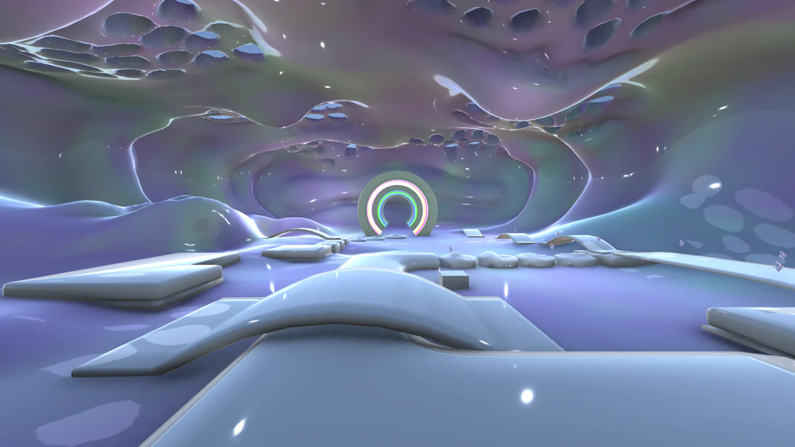

Project 01 / Interactive installation
Invisible Violence
How harm can remain hidden within familiar and seemingly trustworthy settings.
Invisible Violence brings together five childlike heads, an exposed mechanical structure, and newspapers documenting cases of abuse. When a visitor approaches, the heads turn away, avoiding a direct encounter between the viewer and the installation. The visible wires and supports draw attention to the mechanisms controlling their movement.
- Format
- Kinetic installation
- Elements
- Five heads · Aluminium frame · Newspapers
- Interaction
- A camera detects the visitor’s face
- Theme
- Structural violence
The mechanism
A visibly mechanical structure
The motorized platform measures approximately 11 × 6.7 × 5.9 inches. It holds the mannequin head and uses a servo motor to control its rotation. The camera detects the viewer, allowing the head to turn away as someone approaches the installation.
Film1:30
